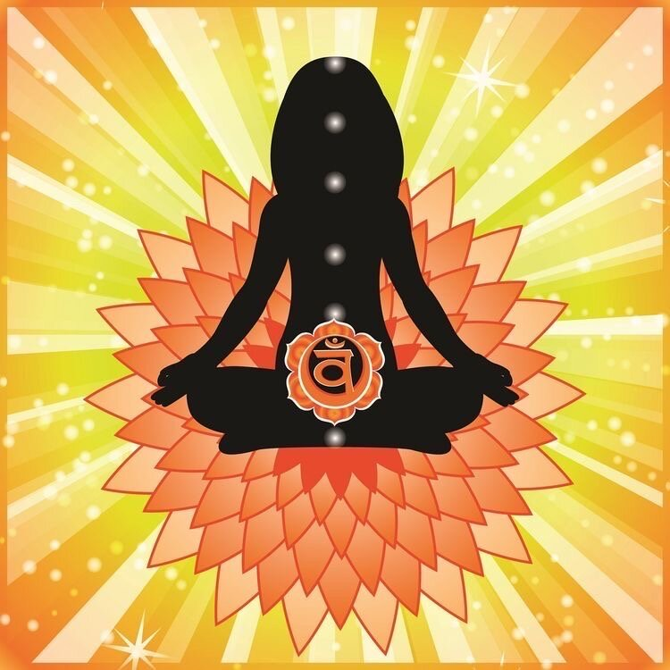

2 Чакра - "Свадхистана"| Расшифровка, где находится, как раскрыть
Чакры - это энергетические центры в теле человека, которые отвечают за наше самочувствие. Подробнее об этом здесь, а в этой статье мы поговорим об основной, первой чакре - Муладхара.
2 чакра "Свадхистана" (сакральная) - отвечает за простые эмоции, сексуальность, удовольствие.
- Расположение: нижняя часть живота (гениталии, крестец, поясница, бёдра)
- Внешний вид: круг, включающий 6 оранжевых лепестков
- Функции: дарит уверенность, поддерживает здоровые эмоции, чувственность, интимные связи, баланс в отношениях
Симптомы заблокированной энергии:
- Боль в пояснице (физика)
- Гипогликемия (физика)
- Заболевания мочеполовой системы, проблемы с почками и суставами, с поджелудочной железой и репродуктивными органами, нарушения в работе кишечного тракта, сильные менструальные боли и т.п. (физика)
- Анемия (физика)
- Одиночество (энергия)
- Отсутствие идей, низкая продуктивность (энергия)
- Тревожность (энергия)
- Эмоциональная нестабильность (энергия)
- Проблемы с интимной жизнью (энергия)
Яркие примеры заблокированной 2 чакры: алкоголики, наркоманы, люди, ведущие аморальный образ жизни, тираны и собственники, агрессивные, презирающие всё вокруг, любители азартных игр, неуверенные в себе, отгораживающиеся от всего мира.
Важно! При любом недомогании обращайтесь к врачу. Изучение чакр - это лишь дополнительная помощь в борьбе с недугом.
Что блокирует энергию:
Непринятие своего природного начала, отказ от интимной жизни, неудовлетворённость, отсутствие гармонии во взаимоотношениях разного уровня (к примеру, родитель-ребёнок), постоянные претензии.
Как открыть корневую чакру:
Принятие мужского и женского начала, налаженная интимная жизнь, йога и медитации (направленные на раскрытие второй чакры), использование эфирных масел (сандал или жасмин).
Тёплая ванна, больше времени проводить с водой (к примеру, у водоёмов), включить оранжевые оттенки (одежда, пища) в свою жизнь, использовать соответствующие камни (в медитациях или просто носить с собой).
Как понять, что чакра открыта и сбалансирована?
Удовлетворение от жизни, налаженные интимные отношения, гармония во всех направления жизни: здоровье, любовь, секс, финансы.